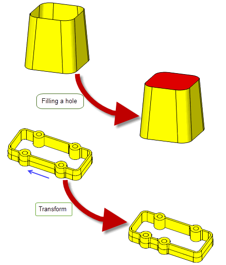

|
Introduction To Model Editing |
|
Contents
This volume describes modeling operations that are used to modify faces on bodies. It provides an overview of the model editing functionality and explains how to delete, identify or replace faces in a body. It explains how to modify faces so they can be easily used in molding and casting or to fill holes in a body. It also provides information on how to create bodies by transforming, spinning, sweeping or offsetting a face.
This volume contains the following chapters:
-
Chapter 63, “Overview of Editing Models” describes common functionality
-
Chapter 64, “Deleting Entities” describes how to delete faces and edges
-
Chapter 65, “Identifying And Simplifying Model Details” describes how to simplify the geometry of a body and how to identify specific details on a body
-
Chapter 66, “Replacing The Surfaces Of Faces” describes how to create and attach a surface to a face
-
Chapter 64, “Tapering” describes how a face can be modified for ease of use when molding or casting a model part
-
Chapter 69, “Patching” describes the various ways to modify a face
-
Chapter 70, “Filling Holes In A Body” describes how fill holes or gaps in a solid or sheet body
-
Chapter 71, “Moving Faces” describes how faces can be transformed, swept, spun or offset
-
Chapter 72, “Creating New Bodies From Existing Entities” describes how to create solid bodies from existing faces in a body
-
Chapter 73, “Generic Face Editing” describes Parasolid’s comprehensive functionality for applying multiple edits to a body in a single function call.

Figure 62-1 An example of modifying operations on faces
[back to top]